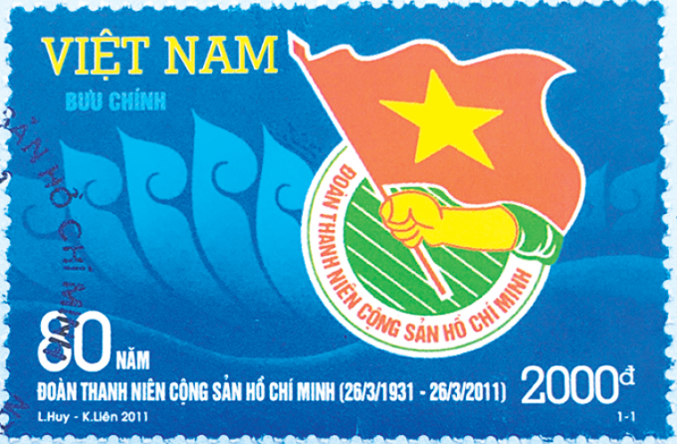

Mùa xuân năm 1931, từ ngày 20 đến ngày 26/3, tại Hội nghị Ban chấp hành Trung ương Đảng lần thứ 2, Trung ương Đảng đã giành một phần quan trọng trong chương trình làm việc để bàn về công tác thanh niên và đi đến những quyết định có ý nghĩa đặc biệt, như các cấp ủy Đảng từ Trung ương đến địa phương phải cử ngay các ủy viên của Đảng phụ trách công tác Đoàn. Trước sự phát triển lớn mạnh của Đoàn trên cả 3 miền Bắc, Trung, Nam, ở nước ta xuất hiện nhiều tổ chức Đoàn cơ sở với khoảng 1.500 đoàn viên và một số địa phương đã hình thành tổ chức Đoàn từ xã, huyện đến cơ sở
Sự phát triển lớn mạnh của Đoàn đã đáp ứng kịp thời những đòi hỏi cấp bách của phong trào thanh niên nước ta. Đó là sự vận động khách quan phù hợp với cách mạng nước ta; đồng thời, phản ánh công lao trời biển của Đảng, của Chủ tịch Hồ Chí Minh vô cùng kính yêu - Người đã sáng lập và rèn luyện tổ chức Đoàn. Được Bộ Chính trị Ban chấp hành Trung ương Đảng và Bác Hồ cho phép, theo đề nghị của Trung ương Đoàn thanh niên Lao động Việt Nam, Đại hội toàn quốc lần thứ 3 họp từ ngày 22 - 25/3/1961 đã quyết định lấy ngày 26/3/1931 (một ngày trong thời gian cuối của Hội nghị Trung ương Đảng lần thứ 2, dành để bàn bạc và quyết định những vấn đề rất quan trọng đối với công tác thanh niên) làm ngày thành lập Đoàn hàng năm. Ngày 26/3 trở thành ngày vẻ vang của tuổi trẻ Việt Nam, của Đoàn Thanh niên cộng sản Hồ Chí Minh quang vinh.
Những thế hệ thanh niên kế tiếp nhau đã chiến đấu anh dũng vì độc lập tự do của Tổ Quốc, vì chủ nghĩa xã hội đã liên tiếp lập nên những chiến công xuất sắc và trưởng thành vượt bậc.
Mỗi chặng đường lịch sử của dân tộc, Đoàn TNCS Hồ Chí Minh có những hình thức đấu tranh và những nhiệm vụ đặt lên hàng đầu khác nhau. Với mỗi giai đoạn, tên gọi của Đoàn đã được thay đổi.
Tháng 5/1935, Mặt trận Nhân dân Pháp được thành lập và sau đó giành được đa số phiếu trong cuộc bầu cử Quốc hội tháng 6/1936. Chính phủ phái tả lên cầm quyền ở Pháp. Căn cứ diễn biến tình hình thế giới và trong nước, tháng 7/1936, Hội nghị T.Ư Đảng đã định ra đường lối, phương pháp tổ chức và đấu tranh cách mạng trong thời kỳ mới. Nhiệm vụ của Đảng và nhân dân ta lúc này là tập trung mũi nhọn đấu tranh chống bọn phản động thuộc địa và tay sai, đòi các quyền tự do, dân chủ, cải thiện đời sống. Vì vậy, Đảng chủ trương lập Mặt trận Nhân dân Phản đế sau đổi thành mặt trận Thống nhất Dân chủ. Hội nghị BCH T.Ư Đảng họp tháng 7/1936 đã ra những quyết định quan trọng nhằm tăng cường sự lãnh đạo của Đảng đối với công tác vận động TN. Theo đó, trong thời kỳ cách mạng từ giữa năm 1936 đến mùa thu năm 1939, Đoàn Thanh niên Cộng sản Đông Dương mang tên Đoàn Thanh niên Dân chủ Đông Dương phù hợp với nhiệm vụ chính trị qua các nghị quyết của Đảng như trên đã nêu. Đoàn Thanh niên Dân chủ hoạt động công khai, có cơ quan báo chí riêng, đó là các tờ “Bạn dân”, “Thế giới”, “Mới” phát hành ở cả ba miền đất nước. Đoàn đã xây dựng đội ngũ của mình gồm hàng vạn đoàn viên, đấu tranh kiên cường dưới ngọn cờ của Đảng, tiếp nối truyền thống vẻ vang của Đoàn Thanh niên Cộng sản Đông Dương (1931 – 1935). Ngoài việc phát hành báo, tổ chức Đoàn còn lập các Hội đọc sách, Hội văn nghệ, Hội thể thao, đặc biệt là hình thành các nhóm nghiên cứu chủ nghĩa Mác. Nhiều tác phẩm chính trị, văn học của C.Mác. F.Angghen, V.I.Lênin, Goocki… như: “Tuyên ngôn Đảng cộng sản”, “Tư bản”, “Nhà nước là gì?”, “Người mẹ”… cũng như các cuốn sách do các chiến sĩ cộng sản Việt Nam viết như: “Vấn đề dân cầy” của Qua Ninh và Vân Đình, “Mác xít phổ thông” của Hải Triều và Thơ Tố Hữu được đông đảo đoàn viên, thanh niên hân hoan đón đọc. Được sự quan tâm của các Xứ ủy Đảng, phong trào TN và tổ chức Đoàn được củng cố, phát triển sâu rộng, có hệ thống từ cơ sở lên đến tỉnh, thành và xứ. Tuy nhiên, đến tháng 9/1939, đại chiến thế giới lần thứ 2 bùng nổ. Thực dân Pháp thẳng tay thi hành chính sách đàn áp, khủng bố phong trào đấu tranh của các tầng lớp nhân dân và TN ta. Tổ chức Đoàn phải trở lại hoạt động bí mật.
Tháng 11/1939, T.Ư Đảng họp Hội nghị lần thứ 6 tại Bà Điểm (Hóc Môn, Gia Định). NQ Hội nghị nhấn mạnh giải phóng dân tộc là nhiệm vụ hàng đầu của CMGP dân tộc, là nhiệm vụ hàng đầu của CM Đông Dương. Hội nghị chủ trương lập Mặt trận Thống nhất Dân tộc Phản đế Đông Dương nhằm đoàn kết rộng rãi các tầng lớp nhân dân, các giai cấp và dân tộc ở Đông Dương để đánh đổ đế quốc Pháp và tay sai của chúng. Theo chủ trương của Đảng, Đoàn Thanh niên Dân chủ Đông Dương mang tên mới là Đoàn Thanh niên Phản đế Đông Dương tiếp nối sự nghiệp vẻ vang của các tổ chức TNCS và TNDC trước đây. Đoàn đã xây dựng được cơ sở ở nông thôn, trong nhà máy và các trường học. Trong tình hình mới, tổ chức Đoàn hoạt động bí mật và được tổ chức chặt chẽ. Những ĐVTN Dân chủ được thử thách, lựa chọn và chuyển thành ĐVTN Phản đế, các hội viên TN trong các tổ chức TN phổ thông được giao những công tác thích hợp để thử thách bồi dưỡng. Tháng 9/1940, Phát xít Nhật xâm lược Đông Dương. Từ đây nhân dân Việt Nam một cổ hai tròng, bị hai kẻ thù là phát xít Nhật và thực dân Pháp cùng thống trị. Nhưng nhân dân Việt Nam và thế hệ thanh niên nước ta thời kỳ này không chịu khuất phục: Tháng 9/1940, khởi nghĩa Bắc Sơn nổ ra; tháng 11/1940, khởi nghĩa Nam Kỳ bùng nổ với sự xuất hiện lần đầu tiên lá Cờ đỏ Sao Vàng; tháng 1/1941, nổ ra cuộc binh biến ở đồn Chợ Rạng và đồn Đô Lương. Các tổ chức Đoàn TN Dân chủ sau đó là Đoàn Thanh niên Phản đế đã vận động thanh niên đi đầu trong các cuộc đấu tranh và khởi nghĩa vũ trang từng phần, báo hiệu một thời kỳ mới: chuẩn bị tiến tới tổng khởi nghĩa giành chính quyền về tay nhân dân.
Tháng 11/1940, Hội nghị TƯ Đảng lần thứ 7 họp tại Đình Bảng (Bắc Ninh) trong đó có phần nói về: “Vấn đề tổ chức các đoàn thể quần chúng”. Nghị quyết hội nghị ghi: “Vì chính sách của Đảng ta hiện tại là chính sách cứu quốc cho nên mục đích các hội quần chúng cũng xoay về việc cứu quốc là cốt yếu…… Việt Nam thanh niên Cứu quốc từ nay là đoàn thể của tất thảy thanh niên từ 18 đến 22 tuổi muốn tranh đấu đánh Pháp, đuổi Nhật”. Ngày 28/1/1941, lãnh tụ Nguyễn ái Quốc bí mật về nước để cùng Ban chấp hành TW Đảng trực tiếp lãnh đạo phong trào cách mạng Việt Nam. Đây là sự kiện hết sức quan trọng trong tiến trình phát triển của cách mạng nước ta… Tháng 5/1941, Hội nghị lần thứ 8 của TƯ Đảng họp tại Pắc Bó (Cao Bằng) do Nguyễn ái Quốc, đại diện của Quốc tế cộng sản triệu tập và chủ trì. Hội nghị đã nêu một quyết tâm sắt đá: “Trong lúc này, nếu không giải quyết được vấn đề dân tộc giải phóng, không đòi được độc lập, tự do cho toàn thể dân tộc, thì chẳng những toàn thể quốc gia dân tộc còn chịu mãi kiếp trâu ngựa, mà quyền lợi của bộ phận giai cấp đến vạn năm cũng không đòi lại được”. Để tập hợp động viên các tầng lớp nhân dân đứng lên đánh đuổi phát xít Pháp - Nhật, Hội nghị quyết định thành lập Việt Nam Độc lập đồng minh (Gọi tắt là Việt Minh) và các Hội cứu quốc, trong đó có: Đoàn Thanh niên Cứu quốc - Việt Nam - một tổ chức của những thanh niên yêu nước tiếp nối sự nghiệp của các tổ chức thanh niên do Đảng ta và lãnh tụ Nguyễn ái Quốc sáng lập và lãnh đạo trước đó. Hội nghị TƯ Đảng lần thứ 8 có ý nghĩa lịch sử to lớn. Hội nghị đã hoàn thành việc chuyển hướng chỉ đạo chiến lược trong thời kỳ mới. Hội nghị đã nêu rõ vai trò, trách nhiệm của Đoàn TN Cứu quốc trong cao trào đấu tranh của giải phóng dân tộc. Trong suốt chặng đường dài từ 1941 – 1956, Đoàn TNCQ Việt Nam đã đóng góp to lớn, kể cả hy sinh xương máu, cùng dân tộc vùng dậy trong Cách mạng Tháng Tám, lập nên Nhà nước Dân chủ, cộng hòa - Nhà nước Dân chủ nhân dân đầu tiên ở Đông Nam á. Tháng 2/1950, Đại hội Đoàn Thanh niên Cứu quốc Việt Nam được triệu tập tại căn cứ địa kháng chiến Việt Bắc. Đây là Đại hội đại biểu toàn quốc đầu tiên của Đoàn, gồm trên 400 đại biểu của ba miền đất nước. Sau đó, Đoàn đã vận động đoàn viên, TN đi tiếp chặng đường hơn 9 năm kháng chiến đầy gian khổ, hy sinh góp phần xứng đáng làm nên một Điện Biên chấn động địa cầu, giải phóng hoàn toàn miền Bắc (7/1954), bắt tay xây dựng hậu phương lớn XHCN ở miền Bắc, chi viện cho cách mạng giải phóng miền Nam.
Tháng 7/1954, hòa bình đợc lập lại trên miền Bắc, căn cứ vào tình hình và nhiệm vụ mới, Bộ Chính trị T.Ư Đảng trong phiên họp tháng 9/1954 đã chủ trơng đổi tên Đoàn TNCQ Việt Nam thành Đoàn TNLĐ Việt Nam và xây dựng Đoàn TNLĐ Việt Nam thành một tổ chức thực sự có tác dụng là lực lợng dự trữ và cánh tay của Đảng. Quyết nghị có đoạn viết: “Đảng ta là Đảng Lao động Việt Nam. Việc Đoàn TNCQ Việt Nam đổi tên thành Đoàn TNLĐ Việt Nam sẽ làm cho thanh niên thêm phấn khởi, thêm gắn bó với Đảng và do đó càng quyết tâm phấn đấu đến cùng dới ngọn cờ của Đảng”. Trong “Quyết nghị về đổi tên Đoàn TNCQ Việt Nam thành Đoàn TNLĐ Việt Nam và kế hoạch xây dựng Đoàn TNLĐ Việt Nam” (Ban Bí th T.Ư - ngày 19/10/1955) đã nêu rõ tính chất, nhiệm vụ, vấn đề tổ chức và kế hoạch xây dựng Đoàn TNLĐ Việt Nam.
Về tính chất của Đoàn TNLĐ Việt Nam, Quyết nghị nêu: “Đoàn TNLĐ Việt Nam là một tổ chức quần chúng tiên tiến của TN Việt Nam, chịu sự lãnh đạo trực tiếp của Đảng. Đoàn TNLĐ Việt Nam là trờng học của chủ nghĩa Mác-Lênin của thanh niên, là nơi bồi dỡng lực lợng dự trữ của Đảng, là cánh tay thực hiện mọi chính sách của Đảng”. Quyết nghị của Đảng đã vạch rõ nhiệm vụ của Đoàn trong thời kỳ mới và đề ra kế hoạch xây dựng Đoàn là: 1. Đảm bảo tính chất tiên tiến của Đoàn… Không kết nạp ồ ạt và tập thể. Nơi nào chưa có đủ điều kiện đổi tên Đoàn thì chưa đổi. 2. Làm cho ĐVTN có một nhận thức đúng đắn về Đoàn TNLĐ Việt Nam. Việc kết nạp đoàn viên hoặc đổi tên Đoàn phải trên cơ sở tự nguyện, tự giác của TN. 3. Kết hợp chặt chẽ với việc thực hiện những nhiệm vụ công tác chính trớc mắt do Đảng đề ra… Việc xây dựng Đoàn TNLĐ Việt Nam cần làm một cách có lãnh đạo và có kế hoạch cụ thể cho từng vùng…”. Quyết nghị nêu kết luận: “Việc đổi tên Đoàn TNCQ Việt Nam thành Đoàn TNLĐ Việt Nam là một việc rất quan trọng có ảnh hởng đến việc xây dựng một phong trào thanh niên lớn mạnh trong toàn quốc, đến việc phát triển cơ sở Đảng trong quần chúng lao động và việc hoàn thành những nhiệm vụ cách mạng hiện nay. Các cấp ủy Đảng cần nắm vững đờng lối vận động thanh niên của Đảng, trực tiếp lãnh đạo thực hiện nghị quyết này”.
Ngày 2-9-1969, Chủ tịch Hồ Chí Minh, lãnh tụ vĩ đại của Đảng và nhân dân Việt Nam, Anh hùng giải phóng dân tộc, Danh nhân văn hóa thế giới, người sáng lập rèn luyện Đoàn ta qua đời. Toàn thể cán bộ, ĐVTN và đội viên thiếu niên, nhi đồng nước ta vĩnh biệt Người với nỗi xót thương vô hạn. Bác Hồ và Đảng đã coi sự trưởng thành của lớp thanh niên nước ta là một trong những thành quả vĩ đại của cách mạng, có quan hệ trực tiếp đến sự nghiệp xây dựng và bảo vệ Tổ quốc hiện nay và mai sau. Thực hiện Di chúc thiêng liêng của Bác, đáp ứng nguyện vọng của thế hệ trẻ và theo đề nghị của Đoàn TNLĐ Việt Nam, nhân dịp kỉ niệm lần thứ 40 ngày thành lập Đảng (3/2/1930 – 3/2/1970), BCH T.Ư Đảng đã ra Nghị quyết cho Đoàn Thanh niên và đội thiếu niên, Đội Nhi đồng được mang tên Bác. Nghị quyết nêu rõ: “… Thể theo nguyện vọng của thế hệ trẻ nước ta và đề nghị của Đoàn TNLĐ Việt Nam”. BCH T.Ư Đảng Lao động Việt Nam Quyết định: - Đoàn TNLĐ Việt Nam nay là Đoàn TNLĐ Hồ Chí Minh - Đội TNTP Việt Nam nay là Đội TNTP Hồ Chí Minh - Đội Nhi đồng Việt Nam nay là Đội Nhi đồng Hồ Chí Minh Tổ chức Đoàn và tổ chức đội được mang tên Bác là vinh dự lớn lao, đồng thời là trách nhiệm nặng nề trước Tổ quốc và nhân dân. Đoàn ta được mang tên Bác Hồ càng làm rõ mục đích và tính chất của Đoàn là đội tiên phong chiến đấu của TN, đi đầu phấn đấu cho lý tưởng cách mạng cao cả của Đảng và Bác Hồ là độc lập, dân tộc và chủ nghĩa xã hội.
Tháng 4-1975, chiến dịch Hồ Chí Minh lịch sử đã kết thúc thắng lợi, giải phóng hoàn toàn miền Nam. Ngày 26/3/1976, Lễ kỷ niệm lần thứ 45 ngày thành lập Đoàn đã được tổ chức trọng thể tại Hà Nội. Tại Lễ kỷ niệm này, tổ chức Đoàn trong cả nước đã thống nhất mang tên chung là Đoàn Thanh Niên Lao động Hồ Chí Minh. Đại hội lần thứ IV của Đảng họp từ ngày 14 đến 20/12/1976 tại Thủ đô Hà Nội đã quyết định đổi tên đảng Lao động Việt Nam (2-1951) thành Đảng Cộng Sản Việt Nam và thể theo nguyện vọng của cán bộ, ĐVTN cả nước, Đại hội Đảng lần thứ IV đã quyết định đổi tên Đoàn TNLĐ Hồ Chí Minh (1970) thành: Đoàn Thanh niên Cộng sản Hồ Chí Minh. Đại hội Đảng chỉ rõ nhiệm vụ của Đoàn và phong trào thanh niên trong giai đoạn mới là: “Đoàn TNCS Hồ Chí Minh phải được xây dựng và củng cố vững mạnh về chính trị, tư tưởng và tổ chức, xứng đáng là trường học CSCN của lớp người trẻ tuổi, là cánh tay đắc lực và đội hậu bị tin cậy của Đảng”. Được mang tên Đoàn TNCS Hồ Chí Minh là vinh dự và tự hào lớn của toàn thể cán bộ đoàn viên nước ta